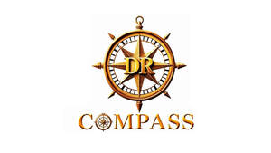

Trade Mark Journal No.2025/048 28 November 2025
UK00004284522 27 October 2025 (9,42)

- Class 9
- Software for automated processing of clinical laboratory results; computer programs for tracking patient health outcomes over time; software for generating alerts and notifications based on clinical parameters; computer software for monitoring medication interactions and contraindications; software for calculating drug dosages based on renal function and patient characteristics File Formats & Outputs: Computer software for generating, editing and formatting medical documentation; software for creating PDF reports for healthcare professionals; software for exporting clinical data in multiple file formats; computer software for importing laboratory data from CSV files; software enabling data exchange between healthcare systems User Interface & Accessibility: Computer software with graphical user interface for medical data entry and display; web-based software applications for clinical decision support; browser-based computer programs for healthcare management; mobile-compatible software for clinical assessment; tablet computer software for medical use Specific Clinical Functions: Computer software for calculating estimated glomerular filtration rate (eGFR); software for calculating kidney failure risk; computer programs for determining blood pressure targets; software for calculating cholesterol treatment targets; computer software for assessing cardiovascular disease risk; software for diabetes management and HbA1c target calculation; computer programs for medication dose adjustment based on renal function Integration & Interoperability: Application programming interface (API) software for healthcare applications; computer software for data synchronization with medical record systems; middleware for connecting medical software applications; computer software plugins for electronic health record systems Security & Compliance: Computer software featuring encryption for medical data protection; secure authentication software for healthcare professionals; computer software for maintaining audit trails of clinical decisions; software incorporating data protection compliance features for healthcare Educational & Reference: Electronic reference databases for medical professionals; downloadable educational materials relating to chronic disease management; computer software providing access to clinical guidelines and evidence-based medicine; Downloadable electronic publications in the nature of medical formularies; digital versions of prescribing guidelines Updates & Versions: Downloadable updates for medical software; computer software patches for clinical decision support systems; upgraded versions of medical assessment software Storage & Backup: Computer software for secure storage of medical assessments; cloud-based backup software for clinical data; data archiving software for healthcare applications Specialized Medical Calculations: Computer software for calculating creatinine clearance; software for Kidney Failure Risk Equation (KFRE) calculations; computer programs for QRISK cardiovascular risk calculation; software for body mass index (BMI) calculation and interpretation; computer software for calculating FRAX fracture risk scores Clinical Workflow: Computer software for clinical task management; workflow optimization software for healthcare professionals; computer programs for generating treatment plans based on multiple clinical guidelines; software for medication reconciliation and review Reporting & Analytics: Computer software for generating statistical reports on patient populations; software for clinical audit and quality improvement; computer programs for analyzing trends in patient health data; software for benchmarking clinical outcomes Multi-user & Collaboration: Computer software enabling multiple healthcare professionals to access patient assessments; collaborative software for medical team decision-making; computer programs with user permission and access control for healthcare settings Specific Disease Management: Computer software specifically for chronic kidney disease staging and management; software for type 2 diabetes treatment optimization; computer programs for hypertension management protocols; software for heart failure medication guidance; computer software for atrial fibrillation management; software for managing patients with multiple chronic conditions Drug Information: Electronic databases of medication dosing information; computer software providing British National Formulary (BNF) guidance; software for checking medication contraindications based on renal function; computer programs for identifying drug-drug interactions in chronic disease management Patient Safety: Computer software for identifying potential prescribing hazards; software generating safety alerts for high-risk clinical scenarios; computer programs for flagging urgent clinical findings; software for fitness to drive assessments based on medical conditions Data Management & Processing: Computer software for medical data analysis and interpretation; software for automated processing of clinical laboratory results; computer programs for tracking patient health outcomes over time; software for generating alerts and notifications based on clinical parameters; computer software for monitoring medication interactions and contraindications; software for calculating drug dosages based on renal function and patient characteristics File Formats & Outputs: Computer software for generating, editing and formatting medical documentation; software for creating PDF reports for healthcare professionals; software for exporting clinical data in multiple file formats; computer software for importing laboratory data from CSV and Excel files; software enabling data exchange between healthcare systems User Interface & Accessibility: Computer software with graphical user interface for medical data entry and display; web-based software applications for clinical decision support; browser-based computer programs for healthcare management; mobile-compatible software for clinical assessment; tablet computer software for medical use Specific Clinical Functions: Computer software for calculating estimated glomerular filtration rate (eGFR); software for calculating kidney failure risk; computer programs for determining blood pressure targets; software for calculating cholesterol treatment targets; computer software for assessing cardiovascular disease risk; software for diabetes management and HbA1c target calculation; computer programs for medication dose adjustment based on renal function Integration & Interoperability: Application programming interface (API) software for healthcare applications; computer software for data synchronization with medical record systems; middleware for connecting medical software applications; computer software plugins for electronic health record systems Security & Compliance: Computer software featuring encryption for medical data protection; secure authentication software for healthcare professionals; computer software for maintaining audit trails of clinical decisions; software incorporating data protection compliance features for healthcare Educational & Reference: Electronic reference databases for medical professionals; downloadable educational materials relating to chronic disease management; computer software providing access to clinical guidelines and evidence-based medicine; electronic medical formularies; digital versions of prescribing guidelines Updates & Versions: Downloadable updates for medical software; computer software patches for clinical decision support systems; upgraded versions of medical assessment software Storage & Backup: Computer software for secure storage of medical assessments; cloud-based backup software for clinical data; data archiving software for healthcare applications Specialized Medical Calculations: Computer software for calculating creatinine clearance; software for Kidney Failure Risk Equation (KFRE) calculations; computer programs for QRISK cardiovascular risk calculation; software for body mass index (BMI) calculation and interpretation; computer software for calculating FRAX fracture risk scores Clinical Workflow: Computer software for clinical task management; workflow optimization software for healthcare professionals; computer programs for generating treatment plans based on multiple clinical guidelines; software for medication reconciliation and review Reporting & Analytics: Computer software for generating statistical reports on patient populations; software for clinical audit and quality improvement; computer programs for analyzing trends in patient health data; software for benchmarking clinical outcomes Multi-user & Collaboration: Computer software enabling multiple healthcare professionals to access patient assessments; collaborative software for medical team decision-making; computer programs with user permission and access control for healthcare settings Specific Disease Management: Computer software specifically for chronic kidney disease staging and management; software for type 2 diabetes treatment optimization; computer programs for hypertension management protocols; software for heart failure medication guidance; computer software for atrial fibrillation management; software for managing patients with multiple chronic conditions Drug Information: Electronic databases of medication dosing information; computer software providing British National Formulary (BNF) guidance; software for checking medication contraindications based on renal function; computer programs for identifying drug-drug interactions in chronic disease management Patient Safety: Computer software for identifying potential prescribing hazards; software generating safety alerts for high-risk clinical scenarios; computer programs for flagging urgent clinical findings; software for fitness to drive assessments based on medical conditions.
- Class 42
- Software as a service (SaaS) featuring software for medical decision support; platform as a service (PaaS) featuring computer software platforms for clinical guideline navigation; cloud computing services featuring software for chronic disease management; providing temporary use of online non-downloadable software for healthcare professionals; software as a service (SaaS) for clinical risk assessment and stratification; hosting of software for medical data analysis; cloud-based software for medication management and prescribing support; providing online non-downloadable software for chronic kidney disease assessment; software as a service (SaaS) for cardiovascular risk calculation; platform as a service (PaaS) for diabetes management; cloud computing services for laboratory result interpretation; providing temporary use of web-based software for clinical audit; software as a service (SaaS) for evidence-based medicine; hosting computer software applications for general practitioners; cloud-based clinical decision support tools; providing online non-downloadable software for NICE guideline implementation; software as a service (SaaS) for multi-morbidity management; platform as a service (PaaS) featuring clinical calculators; cloud computing services for eGFR monitoring; providing temporary use of online software for HbA1c target setting; software as a service (SaaS) for medication dose adjustment; hosting of medical databases; cloud-based software for renal function assessment; providing online non-downloadable applications for lipid management; software as a service (SaaS) for hypertension management; platform as a service (PaaS) for heart failure assessment; cloud computing services for polypharmacy review; providing temporary use of web-based drug interaction checking software; software as a service (SaaS) for clinical protocol compliance; hosting of electronic health record integration software; cloud-based medical reference tools; providing online non-downloadable software for frailty assessment; software as a service (SaaS) for generating clinical recommendations; platform as a service (PaaS) for point-of-care decision making; cloud computing services for patient risk profiling; providing temporary use of online software for treatment algorithms; software as a service (SaaS) for clinical workflow management; hosting of preventive medicine software; cloud-based health screening recommendation tools; providing online non-downloadable software for comorbidity assessment; software as a service (SaaS) for treatment escalation protocols; platform as a service (PaaS) for monitoring biochemical parameters; cloud computing services for clinical pathway navigation; providing temporary use of web-based quality indicator software; software as a service (SaaS) for prescribing safety; hosting of clinical audit platforms; cloud-based software for guideline adherence monitoring; providing online non-downloadable software for primary care analytics; software as a service (SaaS) for patient stratification; platform as a service (PaaS) for chronic disease registers; cloud computing services for population health management; providing temporary use of online software for care planning; software as a service (SaaS) for clinical performance monitoring; hosting of software for quality improvement initiatives; cloud-based tools for medical education and training; providing online non-downloadable software for clinical benchmarking; software as a service (SaaS) for healthcare outcome tracking; platform as a service (PaaS) for integrated care pathways; design and development of medical software; design and development of clinical decision support systems; technical support services relating to medical software; maintenance and updating of medical software; computer programming services for healthcare applications; consultancy in the design and development of clinical software; customization of medical software applications; installation and maintenance of healthcare software; technical consultancy relating to clinical information systems; research and development of medical decision support technology; providing technical information about medical software; computer system analysis for healthcare applications; quality assurance services for medical software; testing of medical software; data encryption services for medical records; electronic data storage for healthcare information; cloud storage services for medical data; data backup services for clinical databases; providing search engines for medical literature; medical data mining services; analysis of clinical data using artificial intelligence; providing artificial intelligence software for medical decision support; machine learning services for clinical prediction models; development of algorithms for medical risk assessment; computer aided scientific analysis in the field of medicine; technological research in the field of clinical informatics; scientific research in the field of healthcare analytics; providing medical research laboratory services using computer software; creating and maintaining websites for healthcare professionals; hosting of web portals for medical professionals; server hosting for clinical applications; rental of web servers for medical software; application service provider (ASP) services featuring medical software; information technology consultancy relating to healthcare systems; computer security consultancy for medical data protection; data security services for healthcare information; monitoring of computer systems for medical applications.
Torres UK Medical Advisors Ltd